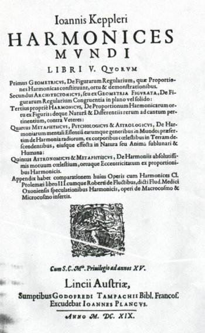
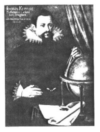
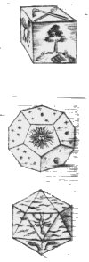
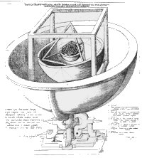
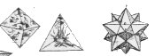
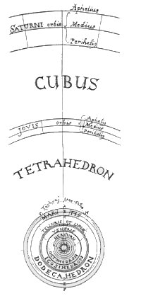

Inhoudsopgave
Besluit (2) Inhoudsopgave
Besluit (2)  Harmonices mundi libri
V Harmonices mundi libri
V
Johannes Kepler (1571-1630)
Een van
de laatste, en zeker een van de opmerkelijkste, pogingen om het idee van de
Harmonie der Sferen te formuleren is gedaan door Johannes Kepler (1571-1630).
In Keplers werk Harmonices mundi (Linz, 1619)(1) bereikt het aloude idee van de Harmonie der Sferen haar
volkomen hoogtepunt, enerzijds doordat Kepler zijn ideeën over de Harmonie
der Sferen op de empirisch-mathematische wetenschappen baseerde(2) en zo tot een nog nooit eerder vertoonde
graad van verfijning in de relatie tussen astronomische waarneming en
muziektheorie kwam, anderzijds doordat ook Kepler zijn voorstelling van de
‘wereld-harmonie’ fundeerde op in zijn ogen de bron van alle
harmonie in deze wereld, namelijk God, de essentiële harmonie zelve
(essentialis illa Harmonia, Deus ipse ...).(3)
Kennis van de wereld, van de harmonische verhoudingen
waaruit zij bestaat, is volgens Kepler mogelijk omdat God de mens daartoe het
vermogen heeft gegeven: doordat God de mens naar zijn beeld schiep is het de
mens mogelijk de samenhang in de schepping, eveneens Gods creatie, te
begrijpen; mens en wereld zijn immers geschapen door en uiteindelijk deel van
dezelfde God.(4)
Max Caspar schrijft: ‘Gott hat die Welt so geschaffen
wie sie ist. Als Werk des allweisen und allmächtigen Gottes muß
diese Welt die schönstmögliche und vollkommenste sein. Die
Vollkommenheit aber besteht in bestimmten von der Geometrie dargebotenen
Verhältnisse. Diese Verhältnisse sind urbildlich im göttlichen
Wesen da. Als Ebenbild Gottes trägt auch der Mensch diese
Verhältnisse in seinem Geist. Daher ist er fähig, sie in ihrer
Verwirklichung in der Welt, die Gottes Abbild ist, zu erkennen.’(5) | | afb. 19
Harmonices mundi (Linz 1619) |
Het zoeken naar kennis van de wereld wordt zo tevens een
religieuze daad: het ‘her-denken’ of ‘na-denken’ van
Gods gedachten.(6) God schiep de wereld
volgens harmonische verhoudingen; proberen te achterhalen welke deze
verhoudingen zijn, ziet Kepler als zijn centrale taak. Zo bevinden zich in
Keplers werk de twee vruchten van de pythagoreïsch-platonische
‘boom’: het gebruik van de wetenschap (Cicero’s divina
studia!), om daardoor tot kennis van en uiteindelijk vereniging met de
Godheid te komen. In de volgende gedeelten wil ik, naast een aantal
biografische punten, met name tonen hoe Kepler zijn Harmonie der Sferen uit
waarneming en muziektheorie opbouwt.
I
‘Die zentrale Idee, die hinter alle Überlegungen
und Spekulationen Keplers steht, ist die Frage nach der Ordnung der Welt. Sie
bezieht sich zunächst auf die reale Welt der Dinge.’(7) De vraag naar hoe de wereld, en dan specifiek
de stoffelijke wereld, geordend is, die vraag beheerst Keplers denken; vanaf
zijn eerste publicatie, Prodomus dissertationum cosmographicarum continens
Mysterium cosmographicum [...]. Tübingen, 1596. - beter bekend als
Mysterium cosmographicum(8), - tot aan
zijn dood in 1630 probeerde Kepler die vraag te beantwoorden. Gedurende zijn
leven heeft hij op die vraag twee antwoorden gevonden.
In het zojuist genoemde werk, Mysterium
cosmographicum, dat verscheen toen hij nog maar 25 jaar oud was, pas
afgestudeerd als Magister Artium in Tübingen (1591) en na een
driejarige theologische studie zojuist (in 1594) in Graz aangesteld als leraar
wiskunde aan de protestantse ‘Stiftsschule’, publiceerde hij zijn
eerste verklaring.(9) Deze verklaring, die bij
hem opkwam terwijl hij voor de klas op het bord stond te schrijven(10), bestond erin dat Kepler het aantal
hemellichamen en hun onderlinge afstanden verklaarde met behulp van
geometrische figuren, de zogenaamde ‘platonische lichamen’ (zie de
afbeeldingen 21 en 21)(11). Een in feite
statisch model dat aansluit bij de pythagoreïsch-platonische traditie,
immers Plato al (Timaeus 54B-56C, zie Plato, noot
xx) had deze lichamen in zijn kosmologie toegepast, maar daarnaast, alleen
de gedachte al dat de ‘vielfältigen Erscheinungen der Welt’(12) door middel van wiskundig uitdrukbare
modellen (geometrie) beschrijfbaar zijn, stamt uit die lange traditie.(13) In dit jeugdwerk maakt Kepler echter nog
geen gebruik van de muziektheorie op de wijze zoals hij later in Harmonices
mundi zal doen.(14)
II
Zoals Athanasius Kircher onder de
reformatie, zo had Johannes Kepler te lijden onder de contra-reformatie, daar
de protestantse ‘Stiftsschule’ in Graz door de overgang van dit
gebied in katholieke handen opgeheven werd. Kepler weigerde van geloof te
wisselen en moest daardoor uitwijken. In 1600 vertrok hij zo naar Praag in de
hoop inzage in de astronomische waarnemingen van Tycho Brahe (1546-1601) te
verkrijgen, de beroemde Deense astronoom die op dat moment aan het hof van
Rudolf II verbonden was. Brahe gaf Kepler tot zijn verbazing een aanstelling
als eerste assistent met als opdracht een verklaring voor de onregelmatige
bewegingen van de planeet mars te vinden.
In deze periode (1600-1607) vindt
de ontwikkeling(15) plaats van Keplers tweede
verklaring voor de orde in de wereld. Deze is een mechanische: de
wisselwerkingen tussen de dingen in de wereld worden door mechanische principes
beheerst; de mechanica van de krachten, de relatie tussen dingen die in
beweging zijn.(16) Voor Keplers gedachten
over het universum betekende dat, dat hij zich richtte op de omlooptijden en
banen van de planeten. |
|
Johannes
Kepler |
Het model dat hieruit ontstaat is een dynamisch model,
waarbij zijn eerste verklaring (het statische model) naar de achtergrond
verdwijnt.(17) Toch blijft het statische
model in Harmonices mundi aanwezig, in het eerste hoofdstuk van boek V
herhaalt Kepler namelijk zijn oude observatie: de afstanden tussen de
hemellichamen zijn te beschrijven met behulp van de platonische lichamen (zie
afbeelding 22).(18)
Afbeeldingen |  afb.20 HM II, tussen p. 57 en 58; en (geheel rechts) de
‘egel', HM V, p. 182 | afb. 21
‘Platonische lichamen in een heliocentrisch universum' uit; Joh.
Kepler, Mysterium Cosmographicum Tübingen, 1596. (tussen p. 26 en
27)   | afb. 22 ibid. HM V,
tussen p. 186 en 187 |
:
1. Johannes Kepler,
Harmonices mundi. Linz, 1619. Facsimile editie van de uitgave uit 1619:
Guiseppe Vecchi (ed.), Giovanni Keppler, Harmonices Mundi Libri V.
Bibliotheca Musica Bononiensis. Bologna, Forni Editore Bologna, 1969. Vert. Max
Caspar, Weltharmonik. Darmstadt, Wissenschaftliche Buchgesellschaft,
1967. In het vervolg: HM. (Boek) V, p. x (p. x) - het tweede
paginanummer is de verwijzing naar de vertaling van Max Caspar. (terug naar tekst)
2. Kepler deed geen enkele concessie: hij zocht net zolang
totdat zijn theorieën geheel met de waarneming overeenstemden. Een
voorbeeld: Keplers weigering om te accepteren dat de beweging van de planeet
mars niet verklaard werd door de heersende theorie over de planetenbewegingen
leidde tot het poneren van elliptische banen voor alle planeten, en daarmee tot
een verwoesting van de oude astronomie; hetgeen werd neergelegd in
Astronomia Nova, 1607 (gepubliceerd 1609). Zie hierover Bruce
Stephenson, Kepler’s Physical Astronomy. New York, Springer
Verlag, 1987.; Alexandre Koyré, The Astronomical Revolution.
London, Methuen & Co. Ltd., 1980. p. 159 e.v.; of E.J. Dijksterhuis, De
mechanisering van het wereldbeeld. Amsterdam, Meulenhof, 1950. p. 338 e.v.
Dezelfde hoge eisen stelt Kepler zich in Harmonices mundi wanneer hij
naar zijn mening overeenkomsten ontdekt tussen de bewegingen van de planeten en
bijvoorbeeld de intervallen uit een toonladder. Zie Daniel P. Walker, `Kepler's
Celestial Music' Journal of the Warburg and Courtauld Institutes 30
(1967): pp. 229-250 (p. 230) (terug naar tekst)
3. HM. IV, p. 123 (219) (terug naar
tekst)
4. Zie over het theologisch aspect van Keplers denken met name
Hans Schavernoch, Die Harmonie der Sphären. Freiburg /München,
Karl Aber Verlag, 1981. pp. 132-139 (terug naar
tekst)
5. Max Caspar, Weltharmonik. Inleiding, p. 14* (terug naar tekst)
6. Saillant detail: het portret van Johannes Kepler toont hem
met wereldbol en passer, attributen waarmee voorheen alleen God werd afgebeeld:
als schepper van alles naar `maat, gewicht en getal'. De afbeelding is zeker
niet blasfemisch bedoeld, of een overmaat aan hubris tonend, maar wijst
veeleer op Keplers oprechte verlangen de door God aangebrachte orde in de
wereld te leren kennen, waarbij Kepler, voor zover het hem mogelijk schijnt te
zijn, slechts in Gods voetstappen wil treden. (terug naar
tekst)
7. Michael Dickreiter, Der Musiktheoretiker Johannes
Kepler. (Neue Heidelberger Studien zur Musikwissenschaft. Bd. 5).
Bern/München, A.G. Francke Verlag, 1973. p. 17 (terug naar
tekst)
8. Johannes Kepler, Mysterium Cosmographicum.
Tübingen, 1596. Ed. Max Caspar en Walther von Dyck, Gesammelte Werke
von Johannes Kepler. I. München, Beck, 1937-... (terug
naar tekst)
9. Zie Rudolf Haase, `Kepler' MGG 7. kols.839-844.
Michael Dickreiter, Musiktheoretiker. p. 123 e.v. Een aardige biografie
is daarnaast Arthur Koestler, Johannes Kepler: zijn leven en zijn werken:
een nieuwe visie op het heelal. Amsterdam, Elsevier, 1962. Meer omvattend
(hoewel redelijk oud) is: Max Caspar, Johannes Kepler. Stuttgart, 1948.
Over Keplers tijd en omgeving, zie Robert John Weston Evans, Rudolf II and
his World, a Study in Intellectual History, 1576-1612. Oxford, Clarendon
Press, 1973. (terug naar tekst)
10. Voor een beschrijving van deze gebeurtenis, zie Bruce
Stephenson, The Music of the Heavens. Princeton, Princeton U.P., 1994.
pp. 76-79 (terug naar tekst)
11. Wat betreft de aanwezigheid van de vijf elementen (aarde.
water, lucht, vuur en quinta essentia) in de vijf platonische lichamen,
zie HM. II, p. 59 (75). Bijvoorbeeld: de dodekaeder heeft twaalf
vlakken, er zijn ook twaalf tekens van de dierenriem (Dodecaedron vero
relinquitur corpori caelesti, habens cundum planorum numerum, quem Zodiacus
coelestis signorum.), dit is natuurlijk de reden dat dodecahedron en
sterrenhemel bij elkaar horen (zie afbeelding 1-3); of, een ander voorbeeld,
‘bij de tetraeder duidt het geringe aantal vlakken de droogheid van het
vuur aan, omdat de definitie van droogheid daarin bestaat dat zij binnen haar
eigen grenzen blijft.’ (In Tetrahedro paucitis planorum signare
videtur siccitatem ignis, cum definitio sit siccorum, suis continere
terminis.). Zo geeft Kepler aan alle platonische lichamen een bepaald
element. (terug naar tekst)
12. Michael Dickreiter, Musiktheoretiker. p. 17 (terug naar tekst)
13. E.J. Dijksterhuis (De mechanisering van het
wereldbeeld. Amsterdam, Meulenhof, 1950. p. 336) formuleert het volgende
bij zijn behandeling van Keplers denken: `De overtuiging van een mathematisch
beschrijfbare structuur van de wereld, theologisch geformuleerd als het geloof,
dat God zich bij de schepping van de wereld door wiskundige overwegingen heeft
laten leiden, de onwrikbare zekerheid, dat eenvoud tevens een kenmerk van
waarheid is en dat het wiskundig eenvoudige identiek is met het
harmonisch-aesthetische, [specifiek over Mysterium Cosmographicum:] het
partij trekken tenslotte van het opvallende, feit dat er juist vijf regelmatige
veelvlakken bestaan, die aan de hoogste eisen van regelmatigheid voldoen en die
dus noodzakelijk iets met de ware wereldstructuur te maken moeten hebben, het
zijn alles onmiskenbare symptomen van de Pythagoraeïsch-Platonische
wereldbeschouwing, die hier [Mysterium Cosmographicum; et aliter!] zo
levend blijkt als ooit. Het is de denkstijl van den Timaios, die na in
een ononderbroken, zij het ook soms onzichtbaar wordende traditie de gehele
Middeleeuwen door de overheersing van het Aristotelisme te hebben getrotseerd,
in de zestiende eeuw weer tot volle ontplooiing komt.' Wel voegt Dijksterhuis
hieraan de notie toe dat de empirie als nieuw element zijn intrede doet,
en schrijft vervolgens: `Nu is er wellicht nooit een natuuronderzoeker geweest,
die zo rijk was aan ingevingen als Kepler en die er tegelijkertijd zo kritisch
tegenover stond, wiens phantasie een zo hoge vlucht nam en wiens hoofd er zo
koel bij bleef, die zich zo kon laten meeslepen door zijn verbeelding en die
dan zo nuchter en geduldig kon gaan zitten narekenen, of het ook houdbaar was
wat ze hem voortoverde. Eerst deze combinatie van bezieling en exactheid heeft
het Pythagoraeïsme waarlijk vruchtbaar gemaakt en de wiskundige mystiek in
den dienst der wetenschap gesteld.’! (terug naar
tekst)
14. Bruce Stephenson, Heavens. p. 89 (terug naar tekst)
15. Voor een beschrijving van deze ontwikkeling, zie
literatuur genoemd in noot 2, met name Dijksterhuis, op. cit. pp.
338-357 en p. 548 (terug naar tekst)
16. Michael Dickreiter, Musiktheoretiker. p. 17 (terug naar tekst)
17. Ibid. p. 19 (terug naar
tekst)
18. HM. V, p. 187 (287), maar zie ook V, p.
214-215(316-317) terug naar tekst
|